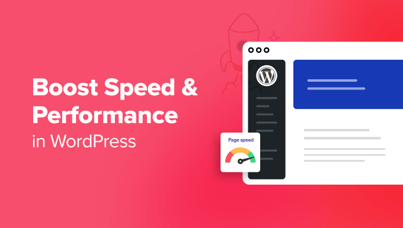

In the realm of online business, having a fast and efficient WordPress site is critical. Speed and performance are not just about user satisfaction they also impact search engine rankings and overall success. Leveraging expert services can be the key to optimizing your site’s performance and ensuring it runs smoothly. Discover how professional help can transform your WordPress site and visit InfiniteWebAssets.com for expert assistance.
Importance of Speed and Efficiency
Enhanced User Experience
A fast-loading website is crucial for keeping visitors engaged. Users expect pages to load quickly, and delays can lead to frustration and increased bounce rates. By ensuring your WordPress site is both fast and efficient, you create a positive user experience that encourages visitors to stay longer and interact more with your content.
Improved Search Engine Rankings
Search engines prioritize websites that load quickly. A fast site is likely to rank higher in search results, making it easier for potential customers to find you. Optimization for speed can thus enhance your site's visibility and drive more organic traffic. InfiniteWebAssets.com offers specialized services to help you achieve better search engine rankings through performance improvements.
How Expert Services Can Help
Comprehensive Site Audits
Experts can perform thorough site audits to identify performance issues. This includes checking for slow-loading elements, inefficient coding practices, and other factors that affect speed. A detailed audit helps in pinpointing specific areas for improvement and developing a targeted optimization strategy.
Advanced Caching Solutions
Caching can significantly boost your site’s performance by storing and serving static versions of your pages. Professional services can implement advanced caching solutions tailored to your site's needs, ensuring that pages load faster for all users, including repeat visitors.
Image Optimization
Images are often the largest files on a website and can slow down load times. Experts can optimize images by compressing and resizing them without losing quality. This not only speeds up your site but also improves overall user experience.
Database Optimization
Over time, your WordPress database can accumulate unnecessary data that slows down performance. Professional services can clean and optimize your database, removing old revisions, spam comments, and other redundant information to enhance site speed.
Theme and Plugin Management
The choice of theme and plugins can impact your site’s speed. Experts can recommend lightweight themes and manage plugins to ensure they do not adversely affect performance. This includes deactivating or removing unnecessary plugins that may be slowing down your site.
CDN Implementation
A Content Delivery Network (CDN) distributes your site's content across multiple servers around the world. This reduces the distance between the server and the user, leading to faster load times. Professional services can set up and configure a CDN to ensure optimal performance for users globally.
Benefits of Expert Services
Faster Load Times
With expert help, you can achieve significant improvements in load times, which directly enhances user satisfaction. Faster load times reduce bounce rates and encourage visitors to engage more with your content.
Better Search Engine Rankings
By optimizing your site’s performance, you improve your search engine rankings. A higher ranking increases your site's visibility and drives more organic traffic, contributing to better business outcomes.
Increased Efficiency
Expert services can streamline your site’s performance, making it more efficient. This includes reducing server load, improving resource management, and ensuring that your site runs smoothly under varying traffic conditions.
Additional Tips for Optimization
Regular Monitoring
Ongoing monitoring is essential to maintain site performance. Regular checks help identify and address any issues that may arise over time. Professional services often include performance monitoring as part of their offering.
Keeping Software Updated
Ensure that your WordPress core, themes, and plugins are always up to date. Updates often include performance improvements and security patches that can contribute to a faster and more secure site.
Seeking Professional Advice
For comprehensive optimization and tailored solutions, consider consulting with professionals. InfiniteWebAssets.com offers expert services to help you achieve and maintain a fast and efficient WordPress site.
Conclusion
A fast and efficient WordPress site is essential for user satisfaction, search engine rankings, and overall success. By leveraging expert services from InfiniteWebAssets.com, you can optimize your site’s performance and enjoy the benefits of improved speed and efficiency.